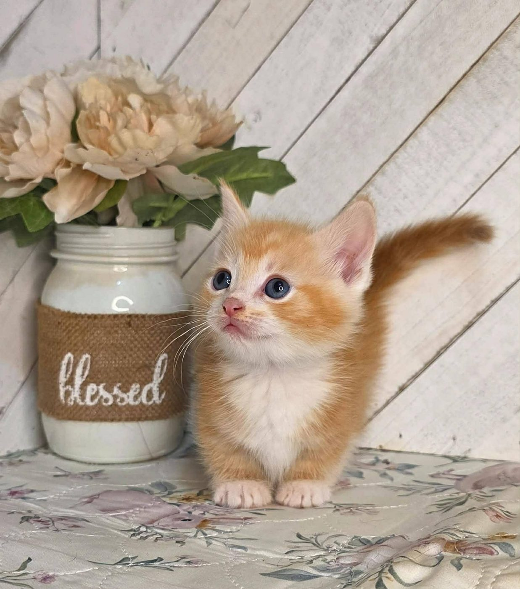
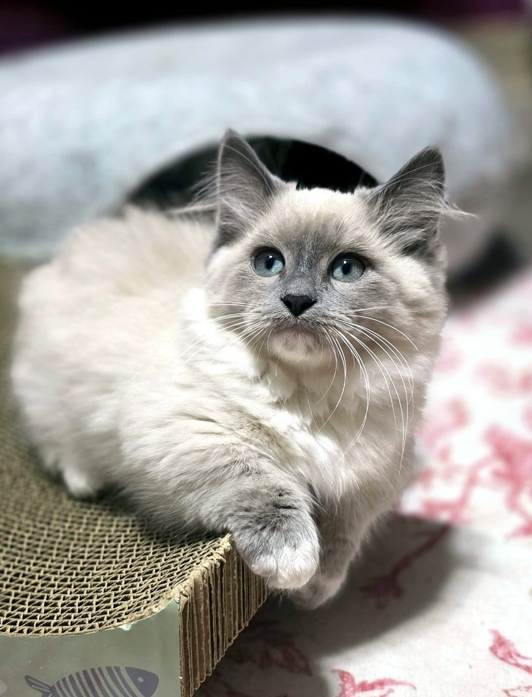
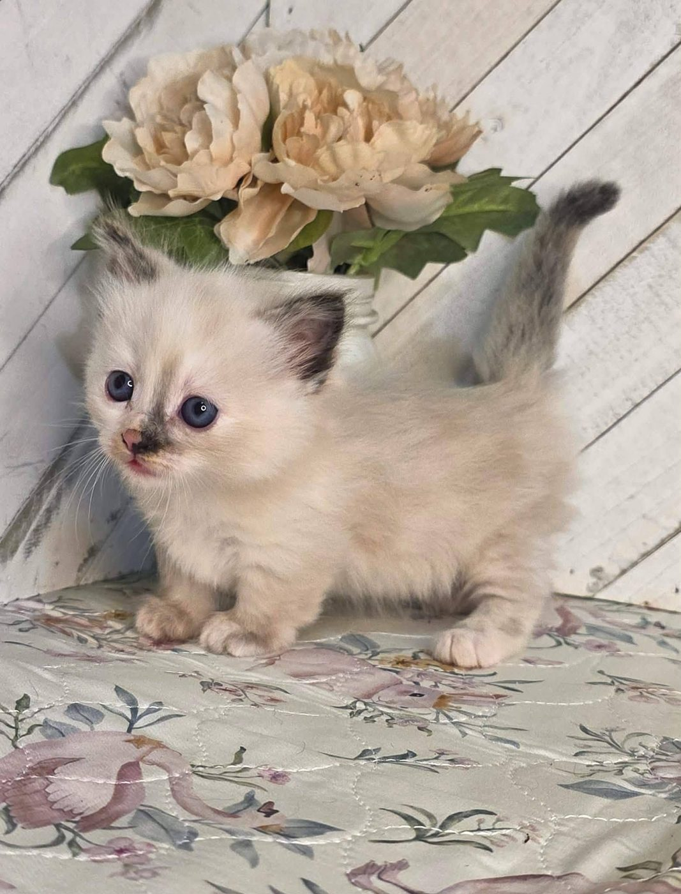
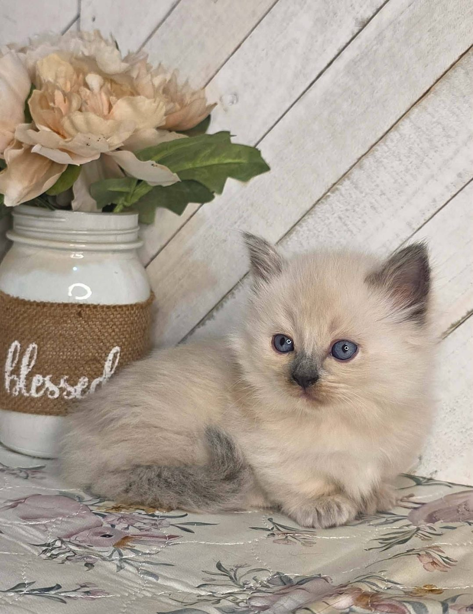
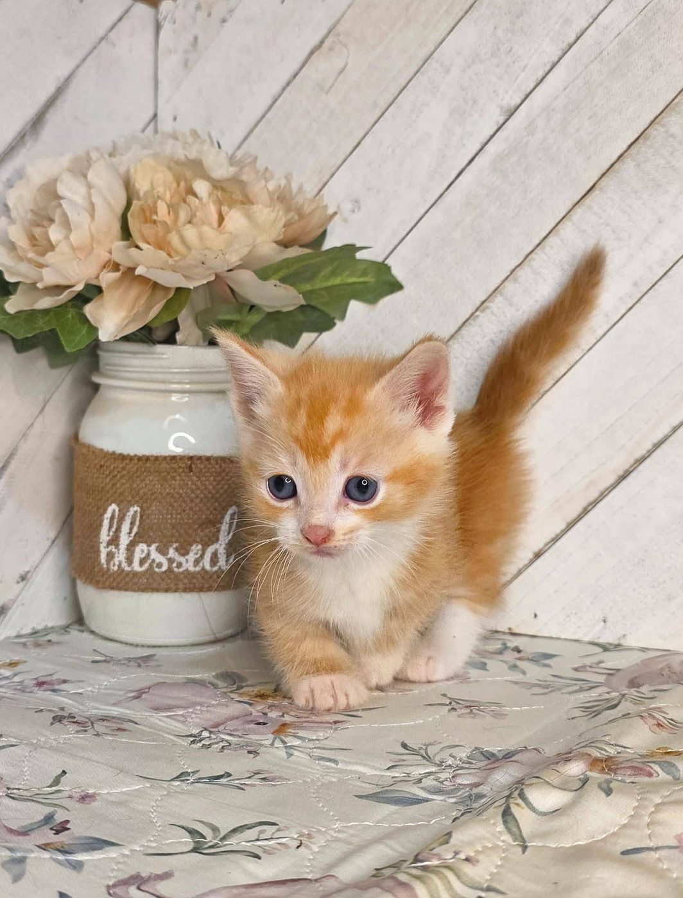
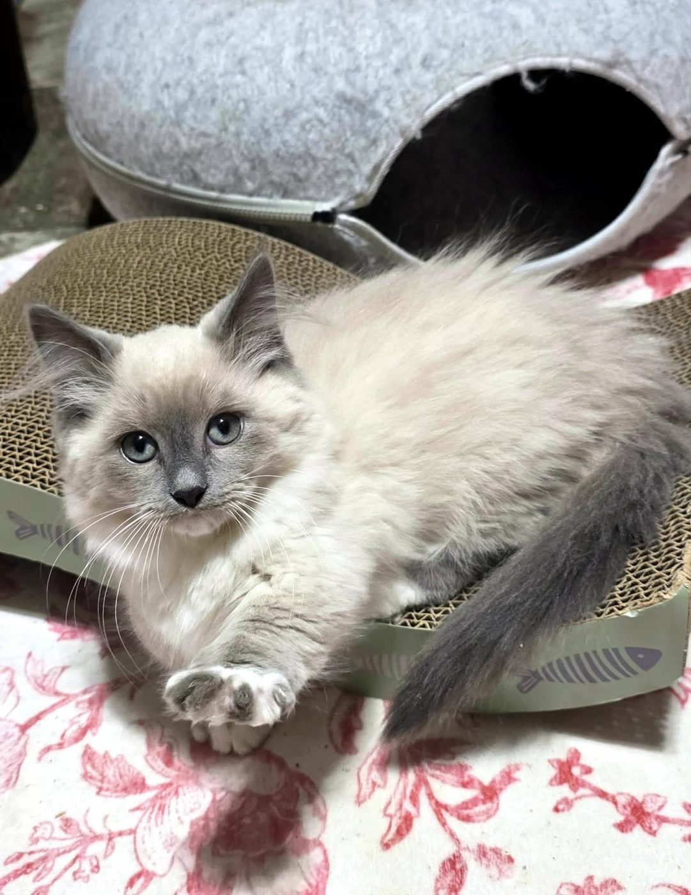

Short legs, big personalities. Munchkin kittens raised in our home, one litter at a time.

Short legs, big personalities. Munchkin kittens raised in our home, one litter at a time.
We're a family-run cattery in Your Town, ST, raising Munchkin kittens since 20XX. Every kitten grows up in our living room, around people, other cats and everyday noise, so they go home confident and cuddly.
Kittens leave us at 12 weeks, vet-checked, with their first vaccinations and a starter kit. Litter announcements and availability are posted on Facebook first.
A few of the little ones who have grown up here. Many more on Instagram.






Questions about upcoming litters? Message us on Facebook, or email hello@littlefootmunchkins.com. You can also call or text (000) 000-0000.